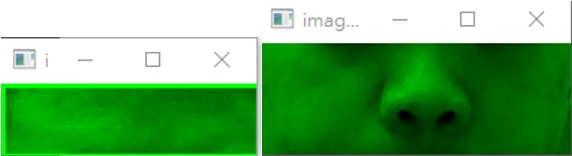
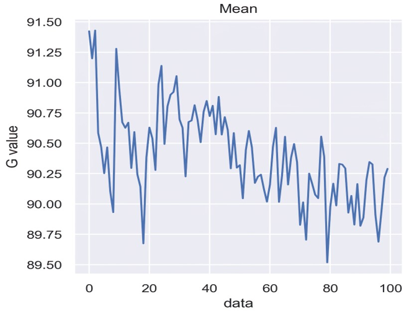
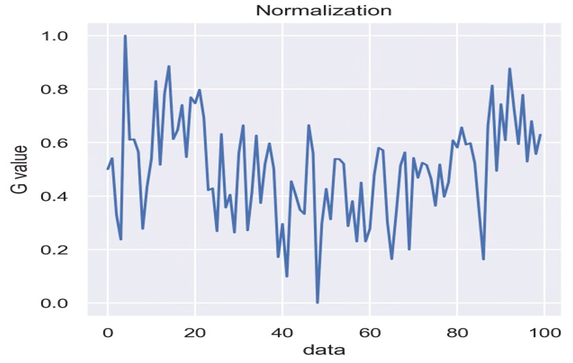
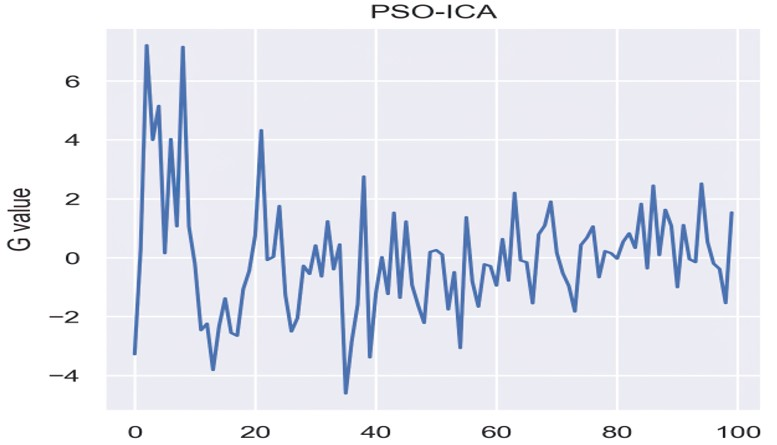
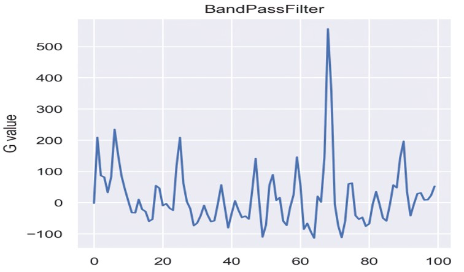
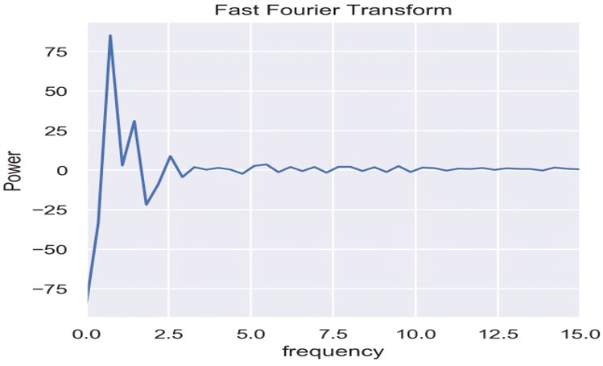
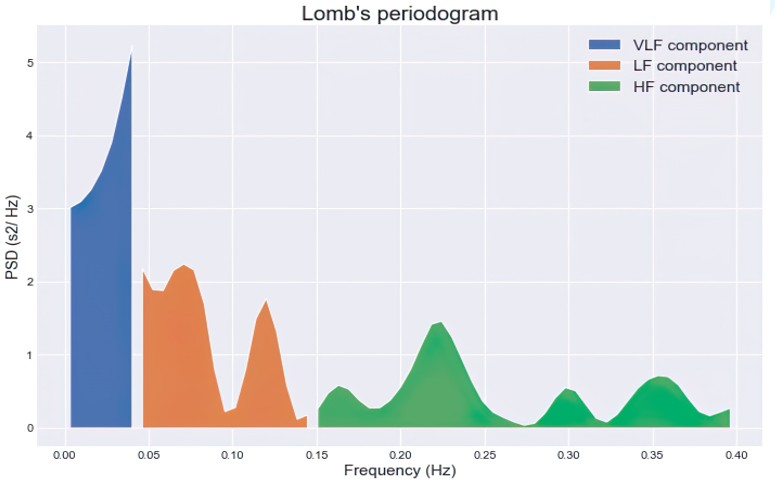

結合獨立成分分析與粒子群聚最佳化法
以即時影像測量心率與心率變異
研究目的本研究目的在於設計一套非接觸式易操作並且方便量測生理訊號的方法，透過WebCam擷取人臉訊號，取出綠色波長的樣本訊號並加以進行演算，就能即時連續量測出該使用者的心率與心率變異的生理參數，因此在公共衛生上可以大幅地降低風險，以低成本與增加儀器方便性，大幅提升醫療的品質，以達到醫生對於診斷精神疾病與心血管疾病相關病症時的輔助診斷工具。
流程圖
本系統主要分為以下4個部分:訊號前處理、波形處理、頻域轉換、運算生理參數。
1. 透過WebCam獲取影像，利用dilb的81點臉部辨識的演算法，設置出感興趣區域來減少受測者頭部晃動所帶來影響，將感興趣區域擷取到的圖像分離出RGB三通道並提取綠通道，將每張圖提取出的綠通道做平均，累積成一個序列。
2. 將訊號進行去勢波動分析與正規化調整訊號準位，在利用獨立成分分析結合粒子群聚最佳化法去除波形偽影，最後使用帶通濾波，濾器出心率及心律變異的頻帶寬度。
3. 將帶通濾波器濾出的波形透過快速傅立葉轉換，將心跳訊號的時間序列轉為頻域，找出波形最高峰值當做輸出，另外以功率頻譜密度呈現心率變異VLF、LF和HF。
4. 最後將這些量測出的生理訊號，必須透過一些公式與演算才能轉換成我們看得懂的數值。
成果展示
感興趣區域(ROI)系統會將偵測的區域做切割的動作，以降低分析影像的雜訊干擾。
系統擷取到ROI後，將會分離出RGB三原色的通道，並提取綠色通道
 訊號波形圖系統會測量約20秒，經由系統所擷取出綠色通道的圖片做平均，得到一個平均值，並將測量的每張圖片累積出一筆訊號序列。
 正規化波形分析圖將訊號序列正規化可以降低頭部移動所影響的偏移，接著將訊號做去勢波動分析調整準位為0。
 去勢波動波形分析圖 波形處理RPPG 的測量經常受到環境光照的影響，這邊使用 PSO-ICA來消除光照造成的干擾，如圖4.12所示，接著經由0.4~10Hz的帶通濾波器，將雜訊濾除，並放大訊號，如圖4.13所示，最後進行波峰波谷檢測，利用幀數計算資料執行時間得出波峰到波峰的時間差。
 圖 4.12 PSO-ICA波形圖  圖 4.13 帶通濾波器波形圖 頻域轉換由圖4.14所示，將帶通濾波器波形，使用快速傅立葉轉換得到頻率，再經由公式計算出心率。使用帶通濾波器濾出HF和LF的頻段，再由功率頻譜密度轉換頻域如圖4.15，並用公式計算心率變異參數。
 圖 4.14 快速傅立葉轉換波形圖  圖 4.15 功率頻譜密度圖 123